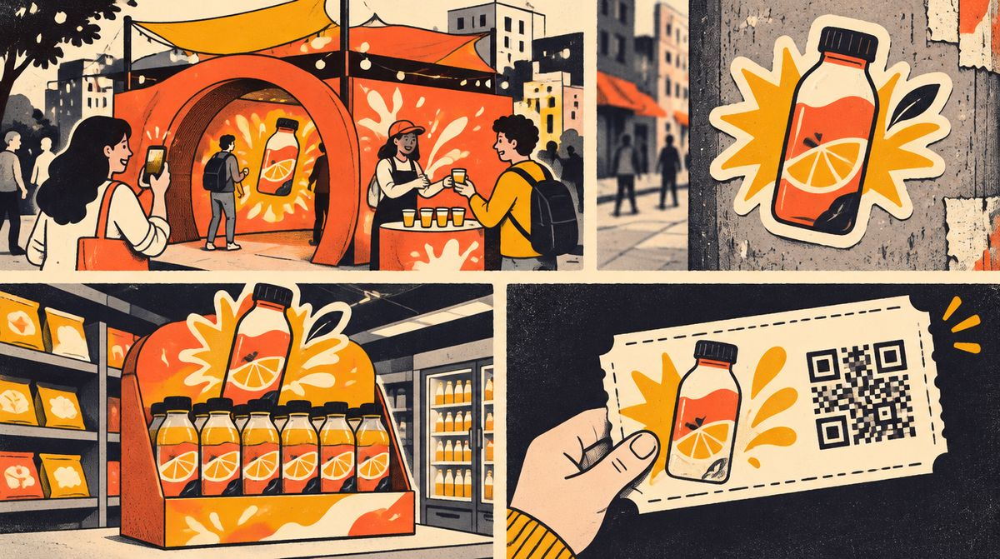

Marketing alternativo: de ATL y BTL a TTL, con directo, trade, guerrilla y experiencial

El marketing alternativo es el conjunto de medios que complementan a la publicidad masiva para acompañar al consumidor hasta la compra y después de ella. En esta primera entrada de la semana 11 explicamos por qué la vieja división ATL/BTL dio paso al enfoque TTL y recorremos cuatro tendencias: marketing directo, trade marketing, guerrilla y experiencial.
De la línea ATL/BTL al enfoque TTL
La «línea» nació en 1954 en Procter & Gamble como una división contable para pagar a las agencias. ATL (Above The Line) eran los medios masivos que pagaban comisión de agencia (TV, radio, prensa) y buscaban alcance y awareness. BTL (Below The Line) eran la producción directa sin comisión (eventos, correo directo, promociones en punto de venta) orientada a segmentación y conversión.
Hoy ese esquema es obsoleto como categoría aislada: la digitalización y la omnicanalidad borraron la frontera. Una campaña en redes tiene alcance de ATL, pero segmentación y métricas de BTL. Se opera entonces bajo TTL (Through The Line): el foco es acompañar al consumidor en todo su customer journey, con segmentación personalizada, medición inmediata del ROI y un CRM que registre cada interacción.
Marketing directo: respuesta medible, uno a uno
Es un sistema interactivo que usa uno o más medios para provocar una respuesta medible o una transacción. Su filosofía es one-to-one y su mantra, el llamado a la acción: no busca recordación sino el formulario, la firma o la suscripción ya.
- Gráficos: flyers, carteles, banderolas, roll-ups y trípticos para venta consultiva.
- Correo físico: herramienta «de lujo» para banca premium y B2B; el papel pesado y el relieve transmiten importancia. IKEA lo combina con marcadores de realidad aumentada para ver muebles en 3D en casa.
- Telemarketing: el canal más humano y persuasivo, pero el más intrusivo; permite manejar objeciones en tiempo real.
- Email, SMS y WhatsApp Business: el email tiene el ROI más alto del mundo digital; el SMS supera el 90 % de apertura en los primeros 3 minutos; WhatsApp es el estándar del conversational commerce.
Sus métricas reinas son la tasa de conversión (de 1 % a 2 % duplica los ingresos), el CPA (si es menor al margen, la campaña escala) y el LTV. El límite es legal: el GDPR europeo y la Ley 29733 peruana exigen consentimiento previo (opt-in) y cancelación inmediata y gratuita (opt-out).
Trade marketing: ganar el último momento de la verdad
Busca ganar la preferencia del canal y persuadir al shopper en el punto de venta. Su base es la evidencia física: orden, limpieza, iluminación y aroma actúan como «vendedor silencioso».
- Zonas calientes (cruces de pasillo, cabeceras de góndola, cajas) para compra por impulso; zonas frías que se calientan con productos de destino como leche o pan.
- Material POP: islas, pallets, stoppers y cenefas que rompen el escaneo visual.
- Visual merchandising: escaparatismo, cross-merchandising (salsa junto a pastas) y la ley del nivel de los ojos, a unos 1.60 m, donde las marcas pagan tarifa premium.
- Activaciones: ruletas y animación para acelerar el sell-out, y códigos QR que conectan el POP con cupones o la app (O2O).
Guerrilla: asombro urbano con poco presupuesto
Jay Conrad Levinson la propuso en 1984 como arma de supervivencia de las pymes ante la TV de las grandes corporaciones: rapidez, movilidad y sorpresa. Sus formatos son el ambient (apropiarse del mobiliario urbano, como el paso peatonal de McDonald's pintado de papas fritas), el ambush (asociarse sin ser auspiciador oficial a un gran evento), el stealth (publicidad encubierta, como actores que fingen ser turistas), el viral y el street marketing. También existen el astroturfing (un falso movimiento espontáneo) y el clean reverse graffiti (limpiar una pared con plantilla para dejar el logo).
Marketing experiencial: que la marca se viva
Pine y Gilmore (1998) describen la economía de la experiencia: de materias primas a bienes, servicios y experiencias memorables, donde el producto es un souvenir. Mientras más sentidos intervienen, más se fija el recuerdo: colorimetría, música (el BPM acelera el flujo o relaja la estancia) y, en lo premium, el aroma branding y la textura.
- Formatos: eventos, pop-up stores (escasez y FOMO), instalaciones con gamificación o AR/VR y experience centers.
- Embajadores y eventos propios: los Geniuses de Apple, los baristas de Starbucks o el Nike Run, donde la marca controla el 100 % de la narrativa.
- Co-creación: Share a Coke convirtió la botella en regalo coleccionable.
- Tecnología: beacons a menos de 3 m, kioscos con datos de leads y photo ops «instagrameables».
- Métricas: NPS (probabilidad de recomendar de 1 a 10) y dwell time físico.
| Medio | Objetivo | Métrica | Herramientas |
|---|---|---|---|
| Directo | Transacción | CR y CPA | Mailing, telemarketing, flyers, SMS |
| Trade | Último momento de la verdad | Rotación (sell-out) | POP, islas, cabeceras |
| Guerrilla | Disrupción y asombro | Earned media | Ambient, ambush, street art |
| Experiencial | Fijación y brand love | NPS, dwell time | Pop-ups, eventos, AR/VR |
En resumen
- ATL/BTL nació en P&G (1954) y hoy se reemplaza por TTL, centrado en el customer journey.
- El marketing directo busca respuesta medible y exige consentimiento (Ley 29733).
- El trade marketing gana el punto de venta con POP, zonas calientes y nivel de ojos.
- La guerrilla rinde en earned media, pero tiene riesgos legales y reputacionales.
- El marketing experiencial convierte el mensaje en vivencia y se mide con NPS y dwell time.
TTL marketing directo trade marketing guerrilla experiencial